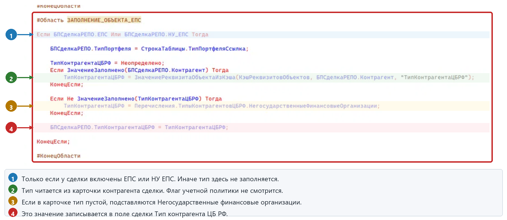

Как в сделку РЕПО попадает поле "Тип контрагента ЦБРФ", если сделку создают из документа "Отчет брокера". В схеме письма это ветка B1.
|
B1 не читает флаг учетной политики
Флаг "Определять тип контрагента по РЕПО от клиента ДУ" здесь не используется. Тип берется из карточки контрагента самой сделки. Если его нет, подставляются "Негосударственные финансовые организации".
|
В документе "Отчет брокера" нажимает команду "Создать сделки РЕПО". Отчет сначала записывается, затем в фоне по каждой строке табличной части создается бизнес-процесс "Сделка РЕПО".
Команда "Создать сделки РЕПО"
|
+-- Документ ОтчетБрокера, форма ФормаДокумента
| СоздатьСделкиРЕПО
| отчет записывается, стартует фоновое задание
|
+-- Модуль менеджера документа
| СоздатьСделкиРЕПО
| открывает объект отчета
|
+-- Модуль объекта документа
| СоздатьСделкиРЕПО
| СоздатьДанныеСделкиРЕПО
| по каждой строке:
| СделкиРЕПОСоздатьСделку
|
+-- Здесь пишется тип
область ЗАПОЛНЕНИЕ_ОБЪЕКТА_ЕПС
только если у сделки ЕПС или НУ ЕПС
затем бизнес-процесс записывается
|
|
||||
| да ↓ нет ↓ | ||||
|
Документ ОтчетБрокера, модуль объекта, процедура СделкиРЕПОСоздатьСделку.
Если БПСделкаРЕПО.ЕПС Или БПСделкаРЕПО.НУ_ЕПС Тогда
ТипКонтрагентаЦБРФ = Неопределено;
Если ЗначениеЗаполнено(БПСделкаРЕПО.Контрагент) Тогда
ТипКонтрагентаЦБРФ = ...Контрагент, "ТипКонтрагентаЦБРФ";
КонецЕсли;
Если Не ЗначениеЗаполнено(ТипКонтрагентаЦБРФ) Тогда
ТипКонтрагентаЦБРФ = НегосударственныеФинансовыеОрганизации;
КонецЕсли;
БПСделкаРЕПО.ТипКонтрагентаЦБРФ = ТипКонтрагентаЦБРФ;
КонецЕсли;
|
Документ "Отчет брокера", модуль объекта, процедура СделкиРЕПОСоздатьСделку, область ЗАПОЛНЕНИЕ_ОБЪЕКТА_ЕПС. Красная рамка - весь блок. Стрелки показывают, откуда берется тип и куда он пишется.

| Ситуация | Что попадет в сделку |
|---|---|
| Контрагент Банк ВТБ (ПАО), в карточке "Кредитные организации". Флаг портфеля включен, у клиента НПФ стоит "Негосударственные финансовые организации". | Кредитные организации. Флаг и клиент портфеля не смотрятся. |
| Контрагент Банк ВТБ, но тип в его карточке пустой. | Негосударственные финансовые организации. Это запасное значение отчета брокера, не тип клиента. |
| Та же сделка заведена не отчетом, а в карточке или пришла обменом из ДУ, флаг включен. | Негосударственные финансовые организации клиента портфеля. Это уже не ветка B1. |